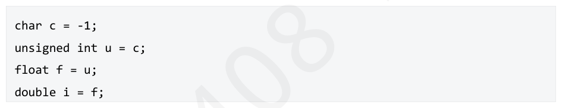
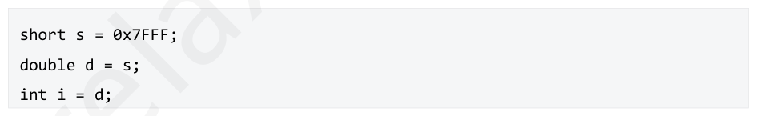
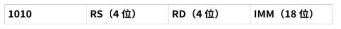
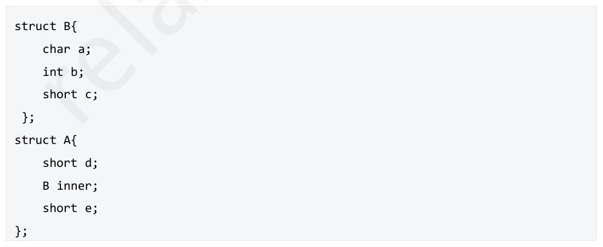
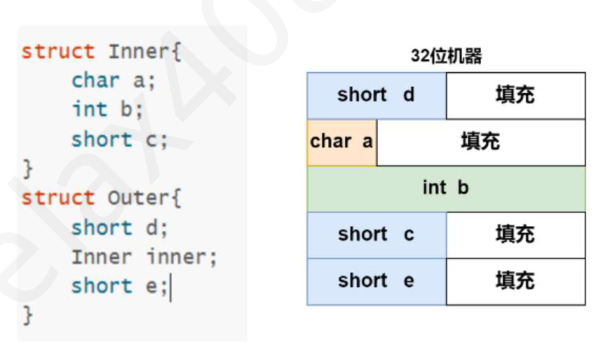
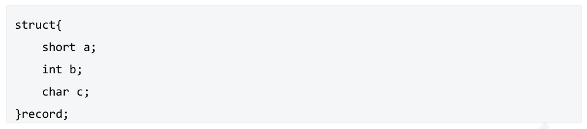
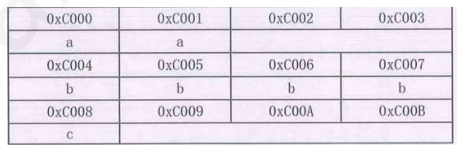
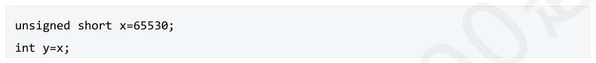

第 61 题
十进制数5 的单精度浮点数IEEE754 代码为（ ）。
- A．01000000101000000000000000000000
- B．11000000101000000000000000000000
- C．01100000101000000000000000000000
- D．11000000101100000000000000000000
答案与解析
答案：A
5转换成二进制值为101，在IEEE754中规格化表示为1.01 × 22，阶数 =127+2=129。故IEEE754编码为：01000000101000000000000000000000，A正确。
第 62 题
按照IEEE754 标准规定的32 位浮点数用16 进制表示：41A4C000，对应的十进制数为（ ）。
- A．-20.59375
- B．-4.59375
- C．20.59375
- D．4.59375
答案与解析
答案：C
41A4C000写成二进制是0100 0001 1010 0100 1100 0000 0000 0000，所以阶码真值是10000011-01111111=4，2的4次方等于16，所以该浮点数的十进制肯定大于16，C正确。
第 63 题
假定两种浮点数表示格式的位数都是32 位，但格式1 的阶码长，尾数短，而格式2 的阶码短，尾数长，其他所有规定都相同。则它们可表示的数的精度和范围为（）。
- A．两者可表示的数的范围和精度均相同
- B．格式1 可表示的数的范围更小，但精度更高
- C．格式2 可表示的数的范围更小，但精度更高
- D．格式1 可表示的数的范围更小，且精度更高
答案与解析
答案：C
阶码越大，数的范围越大；尾数越长，数的精度越⾼，C正确。
第 64 题
假定两种浮点数表示格式的位数都是32 位，但格式1 的阶码长，尾数短，而格式2 的阶码短，尾数长，其他所有规定都相同。则它们可表示的数的个数（）。
- A．格式1 更多
- B．格式2 更多
- C．一样多
- D．不确定
答案与解析
答案：C
表示的数的个数跟总的状态数（离散状态个数）相关，同时32 位，阶码和尾数长短不一，影响的是范围和精度，影响不了表示数的个数，在不考虑其他特殊情况时，总个数都是232个。
第 65 题
在C 语⾔中不同类型数据强制类型转换中，说法错误的是（ ）。
- A．从int 转换成float 时，数据可能会溢出
- B．从int 转换成double 时，数据不会溢出
- C．从double 转换成float 时，数据可能会溢出，也可能舍入
- D．从double 转换成int 时，数据可能舍入
答案与解析
答案：A
float的范围是-3.4E+38～3.4E+38，比int的大，所以不会溢出，但是有可能因为精度问题出现舍入，A错误。double是双精度浮点数，范围>float>int，B正确。double变float，范围变小、精度也变小，可能会溢出，也可能舍入，C正确。double转换为int，只要不是整数就会舍入，D正确。
第 66 题
IEEE 754 标准提供了以下四种舍入模式，其中平均误差绝对值最小的是（ ）
- A．就近舍入(中间值时强迫为偶数)
- B．正向舍入(即朝+∞方向舍入)
- C．负向舍入(即朝-∞方向舍入)
- D．截断舍入(即朝0 方向舍入)
答案与解析
答案：A
就近舍入中间值向两边舍入取决于尾数最后一位，若是0，则直接截断尾数，若是1，则要把尾数最后一位变成0（偶数），所以采取进1 的方式，也叫朝偶数舍入法。中间值左侧朝左侧舍入(一半误差为负)，中间值右侧朝右侧舍入（一半误差为正），平均误差为0。IEEE 754 默认采用就近舍入法。正向舍入平均误差为+0.5，负向舍入平均误差为-0.5，截断舍入不确定正负，但是误差绝对值是0.5，因此本题选A。
第 67 题
设浮点数的阶码和尾数均采用补码表示，且位数分别为5 位和7 位（均含2 位符号位）。若有两个数𝑋= 27× 29/32, 𝑌= 25× 5/8，则用浮点加法计算X+Y 的最终结果是（ ）。
- A．001111100010
- B．001110100010
- C．010000010001
- D．发生溢出
答案与解析
答案：D
浮点数加、减运算一般包括对阶、尾数运算、规格化、舍入和判溢出等步骤。第一步，对阶：第一个数𝑋= 27× 29/32，浮点数格式为001110011101，第二个数𝑌= 25× 5/8，浮点数格式001010010100。对阶原则是小阶向大阶看齐，My右移两位，Ey+2，浮点数格式为001110000101第二步，尾数相加：Mz=Mx+My=0100010，浮点数格式为001110100010。第三步，结果规格化：尾数需要进行一次右规，才能变成规格化数，Mz右移一位，Ez+1，浮点数格式为010000010001第四步，判溢出：由于阶码符号位不同，所以发生溢出，D正确。
第 68 题
对于IEEE754 单精度浮点数加减运算的对阶过程中，需要计算两个阶码𝐸𝑥、𝐸𝑦之差的补码 △𝐸补。若△E≥128 或△E≤-129，则△𝐸补发生溢出。假定𝐸𝑥移、−𝐸𝑦移补 、△𝐸补的最高有效位分别记为𝐸𝑥𝑠、𝐸𝑦𝑠和𝐸𝑏𝑠，则相应的溢出判断方程为（ ）
- A．𝑂𝑣𝑒𝑟𝑓𝑙𝑜𝑤= 𝐸𝑥𝑠̄𝐸𝑦𝑠̄𝐸𝑏𝑠+ 𝐸𝑥𝑠𝐸𝑦𝑠𝐸𝑏𝑠
- B．𝑂𝑣𝑒𝑟𝑓𝑙𝑜𝑤= 𝐸𝑥𝑠̄𝐸𝑦𝑠𝐸𝑏𝑠̄ + 𝐸𝑥𝑠𝐸𝑦𝑠̄𝐸𝑏𝑠
- C．𝑂𝑣𝑒𝑟𝑓𝑙𝑜𝑤= 𝐸𝑥𝑠̄𝐸𝑦𝑠𝐸𝑏𝑠+ 𝐸𝑥𝑠𝐸𝑦𝑠̄𝐸𝑏𝑠
- D．𝑂𝑣𝑒𝑟𝑓𝑙𝑜𝑤= 𝐸𝑥𝑠̄𝐸𝑦𝑠̄𝐸𝑏𝑠̄ + 𝐸𝑥𝑠𝐸𝑦𝑠𝐸𝑏𝑠
答案与解析
答案：D
△𝐸补=𝐸𝑥−𝐸𝑦补=𝐸𝑥移+−𝐸𝑦移补 。假定△𝐸𝑥移、−△𝐸𝑦移补、 △𝐸补的最高有效位分别记为为𝐸𝑥𝑠、𝐸𝑦𝑠和𝐸𝑏𝑠，若△E≥128，△𝐸补发生正溢出，此时𝐸𝑏𝑠为1，而𝐸𝑥一定为正数，即𝐸𝑥𝑠= 1，而E_y 一定为负数，即𝐸𝑦移的符号位为0，计算−△𝐸𝑦移补时，对𝐸𝑦移的各位取反，末位加1，从而得到𝐸𝑦𝑠= 1，综合起来的逻辑表达式就是𝐸𝑥𝑠𝐸𝑦𝑠𝐸𝑏𝑠；若△E≤-129，则 △𝐸补发生负溢出，此时𝐸𝑏𝑠= 0，而E_x 一定为负数，即𝐸𝑥= 0，而E_y 一定为正数，即𝐸𝑦移的符号位为1，计算−△𝐸𝑦移补时，对𝐸𝑦移的各位取反，末位加1，从而得到𝐸𝑦𝑠= 0，综合起来就是𝐸𝑥𝑠̄𝐸𝑦𝑠̄𝐸𝑏𝑠̄，因此选D。
第 69 题
下列有关浮点数加减运算的说法中正确的是（ ）。 I．当浮点数执行舍入操作时，会引起阶码下溢II．若浮点数左归引起阶码下溢，则按照机器零处理III．浮点数执行对阶操作，不会引起阶码溢出IV．单精度浮点数能表示的最大规格化负数为−2−126
- A．I、II、III
- B．I、II、IV
- C．II、III、IV
- D．I、II、III、IV
答案与解析
答案：C
I错误，浮点数的尾数执行舍入操作，使得尾数加1，可能引起右归操作。右规后阶码增加，可能造成阶码上溢出。左规会造成阶码减少，可能引起阶码下溢。 II正确，阶码下溢后，当作机器数零处理。 III正确，同一台计算机中两个浮点数进行对阶操作时，小阶向大阶对阶。既然大阶码都未造成上溢出，则小阶码对大阶码进行对阶操作后也不会引起阶码上溢出。 IV正确，规格化浮点数的最大负数可以转化为求规格化浮点数最小正数问题。阶码字段最小值为1，对应的真值为2−126。尾数最小为1.00000000000000000000000，共23个0，则最小正数为2−126，对应的最大负数为-2−126。故选C。
第 70 题
下列关于舍入的说法，正确的是（ ） I．不仅仅只有浮点数需要舍入，定点数在运算时也可能要舍入II．在浮点数舍入中，只有左规格化时可能要舍入III．在浮点数舍入中，只有右规格化时可能要舍入IV．在浮点数舍入中，左、右规格化均可能要舍入V．舍入不一定产生误差
- A．I，III，IV，V
- B．IV，V
- C．I，V
- D．I，IV，V
答案与解析
答案：C
I 正确，定点数在运算（如乘法或除法）时可能产生多余的小数位，需要舍入来适应固定位数，因此舍入不仅适用于浮点数。II、III、IV 错误，在对阶和右规格化中需要舍入。V 正确，比如尾数溢出部分是0，采用截断法，并不产生误差。
第 71 题
对于IEEE754 单精度浮点数加减运算，只要对阶时得到的两个阶码之差的绝对值∣∆𝐸∣大于等于 （），就无需继续进行后续处理，此时运算结果直接取阶大的那个数。
- A．24
- B．25
- C．126
- D．128
答案与解析
答案：B
对于IEEE754单精度浮点数加减运算，若对阶时得到的两个阶码之差的绝对值 ∣∆𝐸∣等于24，则说明阶小的那个数的尾数需要右移24位，进行尾数加减运算时，虽然其结果的前24位直接取阶大的那个数的相应位，但是由于可以保留附加位，阶小的那个数右移后的尾数可能会在舍入时向前面一位进1。例如1.00. . . 01 × 21+ 1.10. . . 00 × 2−23= 1.00. . . 01 × 21+ 0.00. . . 00（11）× 21= 1.00. . . 01（11）× 21。其中0.00..00（11）后面两个11是附加位，结果1.00.01（11）中后两位也是附加位（小数点23位后的24，25位），最终需要根据这两位进行舍入，舍入后最终答案是1.00..10×2其中若两个阶码之差的绝对值∣∆𝐸∣等于25，则保留的附加位中，虽左边的一位一定是0，采用就近舍入时，完全被丢弃。B正确。
第 72 题
对于IEEE754float 型浮点数a，b，假设a=00840000H，b=00800000H，则同为float 浮点数的c=a - b 的机器数是（），若float d=c+b，则d==a 返回true 还是false（ ）。
- A．00840000H,true
- B．00040000H,true
- C．00040000H,false
- D．00000000H,false
答案与解析
答案：B
float 。【解析】本题主要考察的下溢问题。 33132× 2−126，此时浮点数是⾮规格化浮点数，即float的阶码变为32× 2−126, 𝑏= 1 × 2−126, 𝑎−𝑏= 𝑎= 全0，隐藏位由1变成0。结果为00040000H。float阶码全0就是为了在下溢的时候仍能参加运算，并不是直接当成0处理，所以d=c+b=a-b+b=a，结果为true，B正确。
第 73 题
两个浮点数相加，一个数的阶码值为7，另一个数的阶码值为9，则需要将阶码值较小的浮点数的小数点（）。
- A．左移1 位
- B．右移1 位
- C．左移2 位
- D．右移2 位
答案与解析
答案：C
对阶从小到大，7到9，尾数右移2位，相当于小数点左移2位，C正确。注意：题干中问的是小数点移位的次数，而不是尾数移位的次数。
第 74 题
在计算机内部，浮点数往往是采用IEEE754 格式进行存储的，那么在某计算机中，浮点数x的机器数为43322000H，浮点数y 的机器数内C14C0000H，x-y 的机器数是（ ）。
- A．433EE000H
- B．91CE0000H
- C．433ED000H
- D．92ED0000H接着对尾数进行运算，1.1100010001+0.000110011=1.010010110，经判断，此时不需要规格化和舍入，阶码也没有进位，不溢出。故x-y=1.1101110111 × 27，转化为IEEE754 格式为433EE000H，A 正确。
答案与解析
答案：A
先将两数化为数学表达式。x的阶码为10000110B=134 ，尾数为x=1.01100100010𝐵× 2134−127= 1.01100100010𝐵× 27。y1.01100100010𝐵，那么的阶码为10000010B=130，尾数为-1.10011B，那么y=−1.10011𝐵× 2130−127=−1.10011𝐵× 23。接着进行对阶，将小阶向大阶对齐，此时y=−0.000110011 × 27。接着对尾数进行运算，x-y=1.01100100010+0.000110011=1.0111110111，经判断，此时不需要规格x-y= 1.0111110111 × 27，转化为IEEE754格式为化和舍入，阶码也没有进位，不溢出。故433EE000H，A正确。
第 75 题
两个规格化浮点数X = 2⁵×0.1101B，Y = 2³×（-0.1010B），进行X + Y 运算时，首先需要对阶，对阶后Y 的形式为（ ）。
- A．2⁵×(-0.001010B)
- B．2⁵×(-0.010100B)
- C．2⁵×(-0.101000B)
- D．2⁵×(-1.010000B)
答案与解析
答案：A
对阶原则是小阶向大阶看齐，Y的阶码为3，X的阶码为5，Y的阶码要变为5，阶码增加2，尾数右移2位，Y =23×−0.1010𝐵变为25× ( −0.001010𝐵），A正确。
第 76 题
若两个float 类型的浮点数x，y，x 的机器数为5028 0001H，y 的机器数为4400 0000H。计算z = x + y，运算保留两位附加位，采用就近舍入，则下列说法正确的是（ ） I．y 要向x 对阶II．舍入过程中无进位III．运算无溢出IV．z - x == y 为真
- A．I、II、IV
- B．II、III
- C．I、III
- D．全部正确
答案与解析
答案：C
加法过程如下：对阶：[∆𝐸]补= [𝐸𝑥]移+ [ −[𝐸𝑦]移]补（𝑚𝑜𝑑2）= 10100000 + 01111000 = 00011000，x的阶 • 码比y 大24，小阶向大阶对齐，y 的尾数𝑀𝑦右移24 位，数值高位补0，隐藏位右移到小数点后面，最后移出的位保留两位附加位，即𝑀𝑦= 0.000. . . 0010（括号内表示移到附加位上的两位） • 尾数相加：𝑀𝑥+ 𝑀𝑦= 1.010100. . . 01 + 0.000. . . 0010= 1.010100. . . 0110 • 规格化：已经是规格化，无需操作舍入：附加位上为(10)，为中间数，就近舍入，需要向偶数对齐，即看尾数最后一位是否为1： • 尾数最后1bit 要是1，表示是奇数，需要进1 变偶尾数最后1bit 要是0，已经是偶数，直接舍弃。本题最后一位是1，需要进位，舍入后尾数为1.010100. . . 10 • 溢出判断：舍入后，仍为规格化数，阶码无溢出。由以上过程，I、III 正确，II 错误。我们可以看到，y 的真值为1.0 × 29= 512，舍入后，进位的原因导致29变成了210，所以实际结果为𝑧−𝑥= 𝑥+ 𝑦−𝑥= 210= 1024 ! = 512，IV 为false。本题答案为C。思考：y=511的话，即机器数为43FF8000H，z-x==y为真吗？（还是false，此时附加位为 （01），直接舍去，z-x=0 了），本题说明float 两数相加时，阶码之差[ \ triangle E] \ ge 25 ，较小数可以直接忽略。
第 77 题
假设编译器规定int 和short 型长度分别为32 位和16 位，有C 语言语句如下：
- A．131066
- B．0
- C．-3
- D．-6
答案与解析
答案：D
x的机器数形式为0001FFFAH，其长度32位。将长的数赋给短的数，短的数将会从低位开始保存，超出长度的部分直接丢弃。故v的机器数形式为FFFA，计算机中的数据使用补码形式保存，将其转换为原码后为8006，故y=-6，D正确。
第 78 题
假定i、f 的数据类型是int、float。已知i=12345,f=1.2345e3，则在一个32 机器中执行下列表达式时，结果为“假”的是（）
- A．i == (int)(float)i
- B．i == (int)(double)i
- C．f == (float)(int)f
- D．f == (float)(double)f
答案与解析
答案：C
f 是含有小数位的，（int）f 会导致小数位的丢失。
第 79 题
执行下列c 语言程序后，i 的值是（ ）。

- A．231
- B．231−1
- C．232
- D．232−1
答案与解析
答案：C
首先char c = -1机器码为FFH。由char类型转换为unsigned int类型时，符号扩展填充高位1至32位：FFFF FFFFH，再解释为无符号数，得到u =232−1，转换为二进制是1.1111111111111111111111111111111× 231。由unsigned int类型转换为float类型时，符号位为0，阶码为31，移码表示为1001 1110，尾数部分，因为IEEE 754单精度标准中可表示精度位24位（23位尾数+ 1位隐藏位），小于u中的32位，故需要进行舍入处理。c语言中默认舍入规则是向最接近的偶数舍入，即 • 如果要舍弃的部分的最高位为0，则直接截断。 •如果要舍弃的部分的最高位为1，且剩余部分不为0，则进位。如果要舍弃的部分的最高位为1，且剩余部分为0，则看保留部分的最低位：如果为偶数，即 • 为0，则直接截断，如果为奇数，即为1，则进位。对于本题要舍弃的部分即u中32位补码的后8位，最高位为1且剩余部分不为0，故保留前24位并进位。即1111 1111 1111 1111 1111 1111 + 1得到1 0000 0000 0000 0000共25位，需要进行右规并继续舍入，右归时阶码加1，得到阶码为1001 1111，舍入时，舍弃的部分为最后一位，最高位为0，故直接截断，从而结果为0 1001 1111（1）000 0000 0000 0000 0000 0000，即f =232。最后由float类型转换为double类型，double 的精度和范围都比float大，所以真值不变，i= 232，C正确。
第 80 题
执行下列c 语言程序后，i 的值是（ ）。

- A．32767
- B．32768
- C．-32768
- D．-32767
答案与解析
答案：A
short s = 0x7FFF即215−1 = 32767，转换为double时，数值在双精度范围内可精确表示，d的值仍为32767。double的32767转换为int时直接截断小数部分，结果为32767， A正确。
第 81 题
数据在内存中进行对齐存放的主要目的是（ ）。
- A．节省内存空间
- B．提高数据存取速度
- C．方便数据类型转换
- D．保证数据的完整性
答案与解析
答案：B
数据对齐存放可以使CPU在存取数据时，以更高效的方式访问内存，减少内存访问次数，提高数据存取速度；虽然有时可能节省部分空间，但主要目的是提升速度，B正确。
第 82 题
若一个结构体包含两个成员：short 类型的变量a（占2字节）和int 类型的变量b（占4 字节），在按4 字节对齐的系统中，该结构体的大小是（ ）。
- A．6 字节
- B．8 字节
- C．10 字节
- D．12 字节
答案与解析
答案：B
short类型变量a占2字节，为满足4字节对齐，a后需填充2字节；int类型变量b占4字节，所以结构体大小= 2 + 2 + 4 = 8字节，B正确。
第 83 题
某32 位计算机采用小端方式存储，指令格式为定长32 位，指令add 的格式、编码和功能说明如下：说明：add rd，rs，imm //R[rd] <- R[rs] + imm其中，R[x] 表示通用寄存器x 的内容，imm 为补码表示的立即数，汇编指令中为十进制。通用寄存器r1 ~ r15 的编号为1H ~ FH。则指令add R[5]，R[6]，48 在内存中存储的机器码是（用十六进制表示）（ ）。

- A．29940030H
- B．03004992H
- C．30009429H
- D．92490003H
答案与解析
答案：C
操作码：001010（二进制），rs（源寄存器）：R[6]→编号6H（二进制0110），rd（目标寄存器）：R [5] →编号5H（二进制0101），imm（立即数）：48 →二进制补码0000 0000 0011 0000（18位，正数补码与原码相同），拼接后为0010 1001 1001 0100 0000 0000 00110000B，即为29940030H。又因为按照小端方式存储，故在内存中存储的机器码是30009429H，C正确。
第 84 题
已按勘误修正
某32 位计算机按字节编址，采用小端方式存放数据，有一个IEEE754 单精度浮点数，其值为 −4.25× 217，存放在FFFFC000H开始的连续存储单元中，则存储单元FFFFC002H中存放的是 （）。
- A．C9H
- B．08H
- C．30005829H
- D．20H
答案与解析
答案：B
−4.25× 217转换成机器数为：C9080000H，按小端方式存放，则存储单元FFFFC002H中存放的是08H，B正确。
勘误：C 选项已按勘误改为 30005829H。
第 85 题
已按勘误修正
假设某计算机采用小端方式存储，按字节编址。某一维数组有100 个元素，类型为float，存放在地址以C0001000H 开始的连续区域中，则最后一个数组元素的最⾼有效位（MSB）所在的地址应为（）。
- A．C0001100H
- B．C0001403H
- C．C000118FH
- D．C0001193H
答案与解析
答案：C
float4数据类型占字节，数组中最后一个元素的地址为： C0001000H+99×4=C000118CH ，由于采用小端方式存储，MSB在内存的最高地址处，也就是C000118FH，C正确。
勘误：题干地址已按勘误为 C0001000H，已核对。
第 86 题
关于边界对齐的描述，以下说法正确的是（ ）。
- A．可以减少存储空间需求
- B．要求数据存储的起始地址在与其大小相同的地址倍数上
- C．会导致存储器性能下降
- D．仅适用于指令存储，不适用于数据存储
答案与解析
答案：B
边界对齐是计算机系统中一种数据存储原则，要求数据在内存中存储的起始地址与其数据类型的大小成倍数关系，B正确。这样虽然浪费了一些存储空间，但可提高取指令和取数的速度。边界对齐方式相对边界不对齐方式是一种空间换时间的思想。精简指令系统计算机（RISC）通常采用边界对齐方式，因为对齐方式取指令时间相同，因此能适应指令流水。
第 87 题
在某32 位按字节编址计算机中，结构体A 及其内部的结构体B 的定义如下：若strcut_A 为A类型的结构体且其起始地址为00204000H，则struct_

- A．e 的地址为（ ）。 A．0020400CH
- B．00204008H
- C．00204010H
- D．00204006H
答案与解析
答案：C
结构体变量的对齐规则 • 整个结构体变量的对齐方式与其中对齐方式最严格的成员相同。 • 结构体成员在满足其对齐方式的条件下，取最小可用位置作为成员在结构体中的偏移量。 • 结构体大小应当为对齐边界长度的整数倍(结构体的大小必须是其最大成员大小的倍数，以保证结构体在数组中也是对齐排放。) • 如果嵌套了结构体，嵌套的结构体对齐到自己的最大对齐数的整数倍处，结构体的整体大小就是最大对齐数(含嵌套结构体的对齐数)的整数倍。回到本题，int型数据按4B对齐，char型数据按1B对齐，short型按2B 对齐，而B结构体由于内部包含int、char和short，所以应该按照对齐规则最严格的int对齐规则来对齐，即按4B对齐，且结构体B 的大小也是4 的倍数，为12B。结构体A 中包含B，A 的对齐宽度是成员变量的最大对齐宽度，也就是结构体B 的对齐宽度4B （对齐宽度是B 中按int 对齐的4B，不是B 的大小，注意区分）。所以整个排布如下图所示。e 的地址为00204010H其他一些举例：

第 88 题
某32 位计算机存储器按字节编址，采用小端方式存放数据。假定编译器规定int 和short 型长度分别为32 位和16 位，并且数据按边界对齐存储。某C 语言程序段如下若record 变量的首地址为0xC000，则该结构体的大小是（ ）字节

- A．7
- B．9
- C．10
- D．12
答案与解析
答案：D
C 语言数据的边界对齐规则如下：结构体对齐总结：成员变量为0 的结构体占1B • • 结构体本身对齐按最大成员变量的宽度对齐 • 内部成员本身按自己的数据类型对齐 • 结构体的大小是对齐宽度的整数倍本题结构体成员排列如下，结构体大小必须是int 的整数倍也即12B。思考：若int 和char 交换位置，则结构体大小是多少？答案：8

第 89 题
假定编译器规定int 型和short 型长度分别为32 位和16 位，执行下列C 语言语句：得到y 的机器数为（ ）。

- A．0000 7FFAH
- B．0000 FFFAH
- C．FFFF 7FFAH
- D．FFFF FFFAH
答案与解析
答案：B
C 语言类型转换规则： • 同长度无符号数和有符号数转换，遵循机器数不变转变成对应真值，即补码转补码真值，无符号数转无符号数真值。 •短转长，看短的带不带符号。短是带符号就符号扩展，短是无符号就0 扩展到长的位数，再根据长的变量类型转变成对应真值，这道题短的就是无符号数，所以0 扩展就行了。 • 长转短，直接截断思考1：以下代码y 的机器数是多少? （短的是带符号数，就进行符号扩展，符号位是1，高位补1，答案为FFFFABCDH） 【答案速对】 CCABBCDDCBCBBADDCCCDCCCCADCDBABCCCBACDCBBBABBBCBBDCBCCCACCCDACBACBDDABAADBCACDC